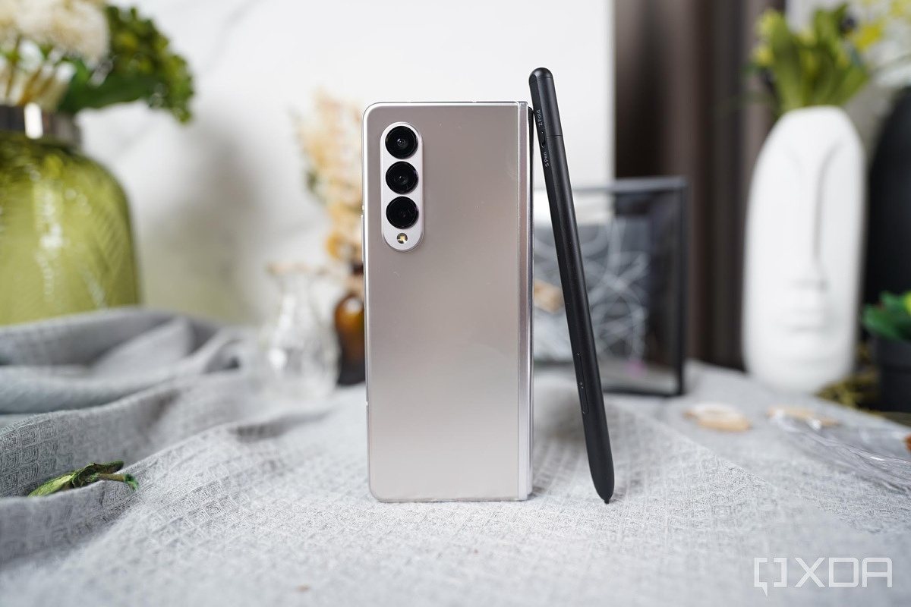

Galaxy Z Fold 3 review: A refined foldable in search of a purpose
Samsung announced the Galaxy Z Fold 3 and Z Flip 3 at the same time. But of the two, the $1,000 Z Flip 3 has a familiar design that's based on clamshell flip phones that have been around for decades. It folds in half from a 6.7-inch phone down to a square that's roughly the size and thickness of several coasters stacked. Meanwhile, the Z Fold 3 costs $1,800, with a futuristic design closer to something you'd see in a sci-fi movie or TV show like Westworld. The latter folds open from a regular phone, into a 7.6-inch square tablet and lacks the same "love at first sight" appeal as the Z Flip 3.
TThis is because Samsung's phone/tablet hybrid design is still inherently new compared to the tried-and-true flip phone motif the Flip 3 embraces. The Z Fold 3 is actually a wonderful tablet, but when it's folded up it has the same hefty appeal as an air conditioner remote control.
Despite its complicated allure, the Galaxy Z Fold 3 is a remarkable showcase of technology and innovation. Pretty much anytime I open the phone in public, there is someone with a dumbfounded look on their face. For the price, you get nearly every high-end feature one would expect in a flagship Android phone. And for $1,800, you better. The few compromises Samsung did make, like having B+ cameras instead of A+ ones, aren't deal breakers and stand as further reminders that the Z Fold 3's high price tag is because the phone folds in half.
Throughout my time with the Z Fold 3, I kept asking myself why the tablet even needs to fold in half? Or is there a better way to design a tablet that folds down to the size of a phone? As much as the Z Fold 3 has improved over its predecessors, it's still largely a concept in search of a purpose. And I couldn't escape that underlying conundrum. Yet if you want a tablet that can fold up and fit into your pocket, the Z Fold 3 certainly deserves your consideration. It's the second best foldable phone Samsung has made to date, with the best one being the more practical Galaxy Z Flip 3.
Stronger, lighter and thinner Fold
The Z Fold 3 takes on the same design and form as the Z Fold 2, albeit with a bunch of improvements. For some, the best improvement might be the $200 drop in price from the $2,000 the Z Fold 2 cost. Most of the phone's upgrades are more iterative, small touches that add up to a more refined package overall.
For instance it's lighter than the previous Fold, which I noticed as soon as I picked it up. But it's still one of the heaviest phones I reviewed this year. It's thinner and more svelte than the Z Fold 2, but still one of the bulkiest phones I have ever tested.
It seems more durable. Obviously, I only had a couple of weeks with the Z Fold 3, so I can only be hopeful that the improvements I noticed span the life of the phone. The metal in the frame and hinge is reinforced and you can feel that extra tensile strength when you hold it, fold it and interact with it. The folding screen, hinge and body feel more like a single uniform whole instead of being separate features. The 7.6-inch main screen still has a crease but it doesn't bother me in the least. You could nitpick it if you want, but the iPhone's notch is far more of an eyesore.
The Gorilla Glass Victus-clad cover screen now has a smooth 120Hz refresh rate that matches the main display and looks lovely. The Z Fold 3 has water resistance and can be submerged up to 1.5 meters (about 5 feet), which is truly remarkable for a folding phone.
Using an S Pen on the Galaxy Z Fold 3 is a blast
One indication that Samsung is confident about the Z Fold 3's durability is that it sells a sharp pointy stylus for you to use on the screen. It's as if Samsung is saying, "We're no longer worried about your fingernails making indentations on the main screen. Go ahead and try out an S Pen."
In my time using the S Pen with the phone, the screen looks just like it did when I took it out of the box. And that's on top of all the times I folded and unfolded it, shoved it in the pockets of my jeans and threw it in my backpack along with whatever else was in there.
Samsung made two versions of the S Pen for the Z Fold 3: the S Pen Fold Edition, which lacks Bluetooth and costs $50; and the S Pen Pro, which has Bluetooth and costs $100. Both have a retractable tip that helps reduce wear and tear on the screen. I only got to try out the S Pen Fold Edition and I noticed that the tip rarely retracted all the way. Instead, it seems to relieve some of the pressure I put on the screen when I draw or write. There's a small arsenal of S Pen tricks such as hover to magnify, which activates when the S Pen is just millimeters away from the screen.
The cover screen doesn't support either new S Pen which is a bummer because there's no way to jot a quick note or a doodle without opening up the Fold. And if you have an old S Pen, you can't use it with the Z Fold 3.
As much fun as it is to use an S Pen on that giant vibrant screen, the Fold in no way replaces the inherent convenience that a Galaxy Note provides. The Fold doesn't let you quickly make a note. And there isn't a place to store the S Pen. It would be nice if you could magnetically attach the S Pen to the Fold 3's hinge in the same way you can attach an Apple Pencil to an iPad Pro. I should note that Samsung sells a bundled S Pen Fold Edition and phone case that stores it along the hinge for $80.
 Under-display camera selfies and Zoom calls on the Z Fold 3
Under-display camera selfies and Zoom calls on the Z Fold 3
There are two, technically three, selfie cameras -- let me explain. You can take a selfie with the hole-punch selfie camera in the cover screen. Or you can flip the cover screen down, use it as a live preview and take a selfie with the main rear camera. Or you can use Samsung's first ever under-display camera, which is mostly hidden behind the main screen.
Out of the three options, the one that is the most curious is the under-display camera. The part of the display in front of the camera has fewer screen elements and translucent wiring. At certain angles or when brighter colors are on the display, you can see the part of the screen where the camera is. Think of this camera setup like looking through a window that has blinds on it.
The under-display camera is only 4 megapixels, which isn't a lot, but that lower resolution helps it see through or around those screen elements. Samsung also uses AI processing to improve the image quality. I took selfies with all three options on the Fold and, no surprise, the photos from the under-display camera looked the worst. Indoor selfies look highly processed and outdoor snaps in good lighting do not look much better.
The under-display camera is intended for video calls and works fine for them. On the few video calls I made using it, people on the other end said that they didn't notice anything out of the ordinary.
But let's go back to why there is an under-display camera. The idea is to reduce visual distractions on and around the display. There isn't a notch. There isn't a hole punch. Instead, you either see nothing (yay!) or when bright colors are displayed, you see a tiny glittery octagon that I found to be more distracting than something like a hole-punch camera. At this point, the benefit of having a screen free of visual interruptions isn't worth the tradeoffs from this under-display camera.
Fold 3 has B+ cameras at an A+ price
Despite all of the improvements to the phone's hardware, the cameras are one area that largely remain the same. In terms of quality and performance, they are a step behind the camera systems found on phones like the iPhone 12 Pro Max and Samsung's Galaxy S21 Ultra. These are good cameras and for most people the photos and videos they capture with them will be fine.
There are five cameras on the Z Fold 3: the aforementioned under-display camera, the cover-screen selfie camera and a triple camera array on the "back" with a main wide-angle camera, an ultrawide-angle camera and a 2x optical telephoto camera that now has optical image stabilization. In bright lighting, photos look good. Digital zoom up to 4x magnification has minimal image deterioration. If you go past 6x, photos look less stellar and have softer details. Night mode on the Z Fold 3 is solid, but compared to the S21 or S21 Ultra, images look soft. Take a look below at a few photos I took with the new Fold.
Videos are decent, but suffer from image noise in all but the most ideal of situations. Take a look at some videos I recorded with the Z Fold 3 below.
There will inevitably be some people who expect the absolute best cameras on a phone that costs $1,800. I'd argue that Samsung made a smart tradeoff to keep that price under $2,000.
Like the Z Flip 3, the Z Fold 3 is essentially its own tripod. Because of its size and flexibility you can put it nearly anywhere to capture a unique angle or perspective.
Galaxy Z Fold 3 gets multitasking right
On the inside, the Z Fold 3 packs nearly every 2021 Android spec you could want. It has a Qualcomm Snapdragon 888 chip and 12GB of RAM. It runs Android 11 and Samsung's One UI 3. Split-screen apps are more customizable, taking advantage of the larger tablet screen. You can put them side by side, stacked vertically or even have three. You can move each app around and resize their windows. You can also save split-screen app groupings and setups for later.
Like the Z Flip 3, the phone's settings has a section called Labs, which lets you optimize nearly any app for the screen. For example, natively Instagram shows up in a thin vertical aspect ratio with screen space on either side of the app. I went into Labs, and forced it to be displayed across the full screen, which worked well.
A useful trait that the Flip and Fold share is Flex Mode. You can position either phone half open like a mini laptop. Flex Mode gets more support in One UI 3 and there are more apps that can take advantage of it. Some apps just move to the top half of the screen with system navigation and brightness controls on the bottom. Other apps, like for videos and music, place the playback controls on the bottom half of the screen. Not every app is optimized for Flex Mode, but this is a huge step up from the Fold 2. I still would like to see apps go farther and even be designed around Flex Mode. Can you imagine a game designed for Flex Mode?
 Galaxy Z Fold 3 has less than average battery life
Galaxy Z Fold 3 has less than average battery life
The Z Fold 3's biggest drawback is its battery life. The dual 4,400-mAh batteries are actually a tad smaller than the ones in the Fold 2. As a result, the Z Fold 3 barely makes it through a day. I imagine that has a lot to do with the combination of 5G connectivity and the fact that there are two screens that run at 120Hz. Screen-on time during my review averaged about three and a half hours, which isn't great. I am still running CNET's battery test and will update this review with the results soon.
The Fold lacks dust resistance. In my use this wasn't an issue. But I recommend being careful if you take the Z Fold 3 to the beach or on a hike or anywhere there's potential for small particles to interact with the phone. This wouldn't be a good phone for Salt BAE.
The screens and finish on the body collect finger smudges easily. I find myself wiping it clean constantly.
Better foldable, but not the best
While I continue testing the Galaxy Z Fold 3, I still question who this phone is for exactly. A phone enthusiast might love all of the technology in the Fold, especially that folding screen. Foldable phones are still at a comparatively early stage, but the lower price offered by the Z Fold 3 and the Z Flip 3 compared to their predecessors shows an effort to make them more accessible. And I hope that's a trend that continues in the coming years. I still hold that most people who want a folding phone will likely want to consider the Z Flip 3 for its familiar flip-phone aesthetic, but if you want that larger tablet shape the Z Fold 3 fulfills that promise.
Author
CNET
10/10/21
© 2021 Tech-Week-Tastic Inspired by Samsung, Developed for Samsung